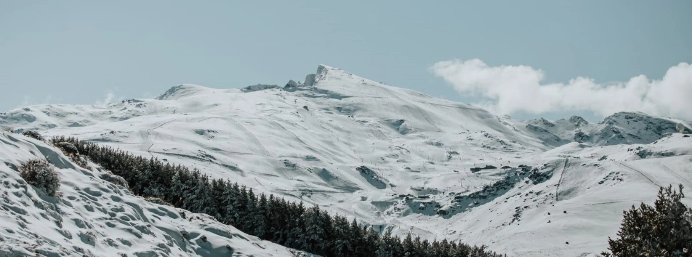

Introducción
Sierra Nevada es una hermosa cordillera ubicada en España. Ofrece vistas impresionantes y una variedad de
actividades al aire libre. Es una cadena montañosa, situada en la cordillera penibética, que está delimitada
por el valle de Lecrín al oeste, el valle del río Guadalfeo al sur, por la depresión Bética al norte, por el
río Nacimiento al este, y por el valle del Andarax al sureste.

Detalles
Sierra Nevada es un macizo montañoso de España perteneciente al conjunto de las cordilleras Béticas,
concretamente al sistema Penibético. Está situada entre las provincias de Granada y Almería. Es el macizo
montañoso de mayor altitud de toda Europa occidental, después de los Alpes. Su altitud máxima se alcanza en
el pico Mulhacén, de 3479 m sobre el nivel del mar. En 1986 fue declarada Reserva de la Biosfera por la
Unesco, en 1989 una amplísima área de este macizo montañoso fue declarada parque natural y en 1999 una gran
parte del mismo pasó a ser considerado parque nacional1 por sus valores botánicos, paisajísticos y
naturales.
Sierra Nevada, junto con el resto de sierras Béticas, se formó durante la Orogénesis Alpina en la Era
Terciaria. A causa de su aislamiento y altitud, desde el fin de la glaciación de Würm el macizo ha quedado
como refugio de innumerables plantas y endemismos impropios de las latitudes mediterráneas en las que se
sitúa, contándose, según fuentes del Ministerio de Medio Ambiente de España,2 66 especies vegetales
vasculares endémicas y otras 80 especies animales propias del lugar.
En sus faldas se encuentra la estación de esquí de Sierra Nevada, la más meridional de Europa y de mayor
altitud de la península ibérica.
El Parque Natural cuenta con numerosas lagunas, entre ellas, la Laguna de Aguas Verdes y la Laguna de la
Mosca, la última llamada así por su exigua dimensión.

Ahora te toca a ti
¡Déjanos tu opinión!